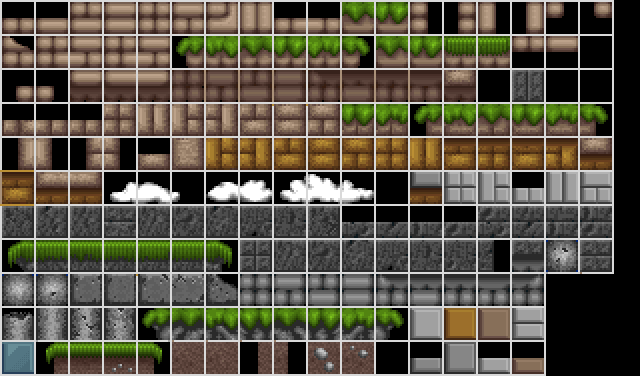
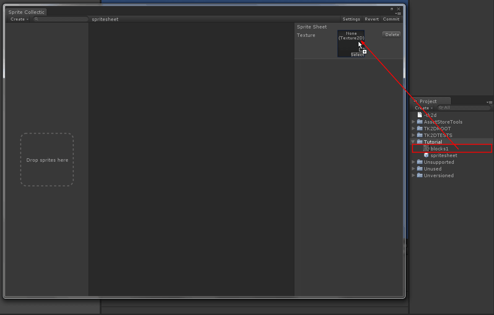
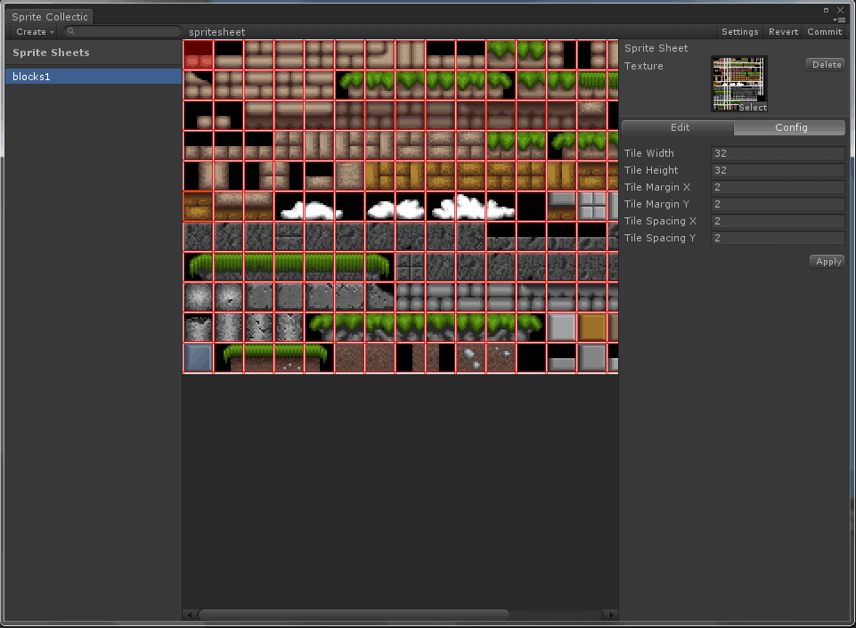
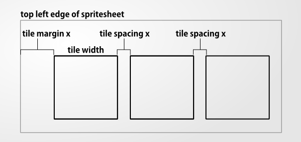
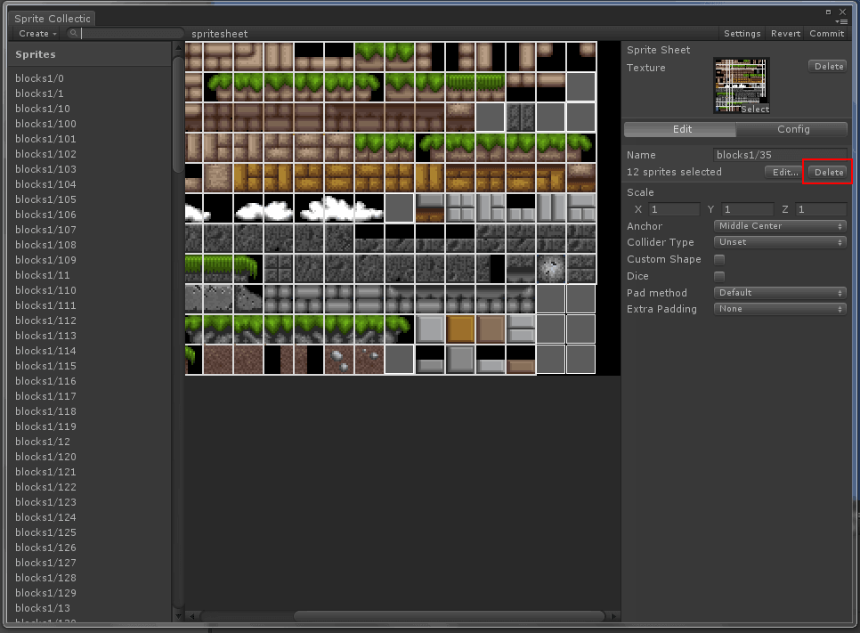

Documentation
Script Reference
Forum
Documentation
Script Reference
Forum
You can import sprite sheets into 2D Toolkit for use directly. We'll walk through importing the sprite sheet shown below.
 This sprite sheet is from SpriteLib.
Create a new sprite collection and open the sprite collection editor, or open an existing one.
Click on "Create > Sprite Sheet"
Drag your sprite sheet texture into the slot shown below.

If your texture isn't set up correctly, you'll be presented with a message warning you to set it up correctly. Click on Set up to let 2D Toolkit automatically make the necessary changes.
You will now be able to enter tile parameters. While you change the parameters, the slices will be overlaid in red.
You can zoom in or out using the mouse wheel / finger gestures.


Once you are happy with the settings, click Apply to slice the texture. You will now be in "Edit mode".
In edit mode, you can click on tiles in the spritesheet and set up parameters on them individually. Control/command click to add to/remove from selection, or click + drag to rectangle select. In this case, we'll delete all the black tiles, so simply multi-select them, and click on delete as shown below.

These textures no longer be used in the final atlas. Should you wish to add these tiles back in, simply switch to the config panel, and click apply again to reslice. Any existing tiles will simply be left as is.
Click commit to save all changes. You will now be able to use this sprite collection like any other. Any changes to the source spritesheet will automatically trigger a rebuild of the sprite collection, as it does with any normal sprite.